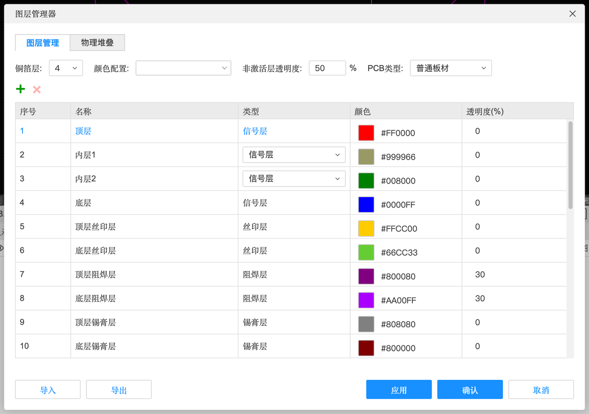
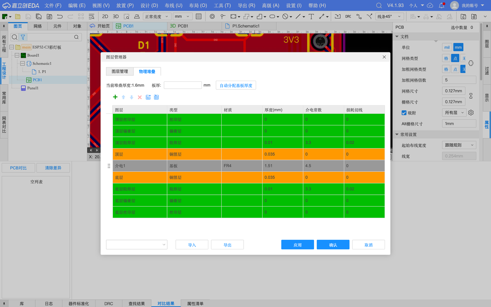
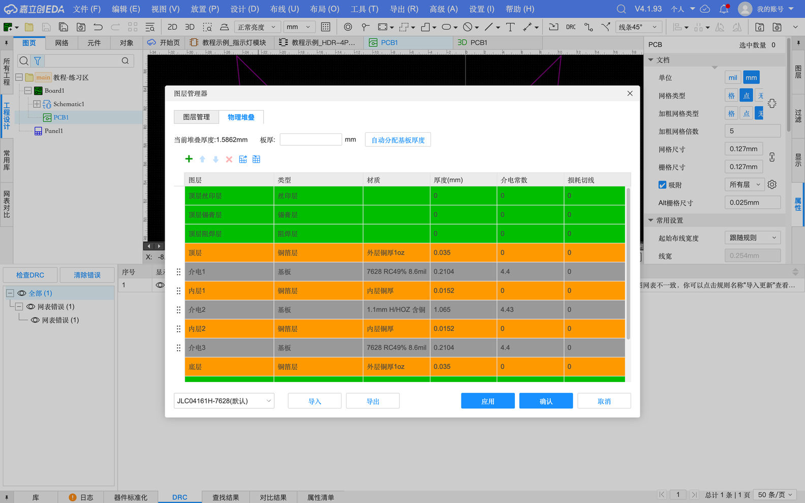
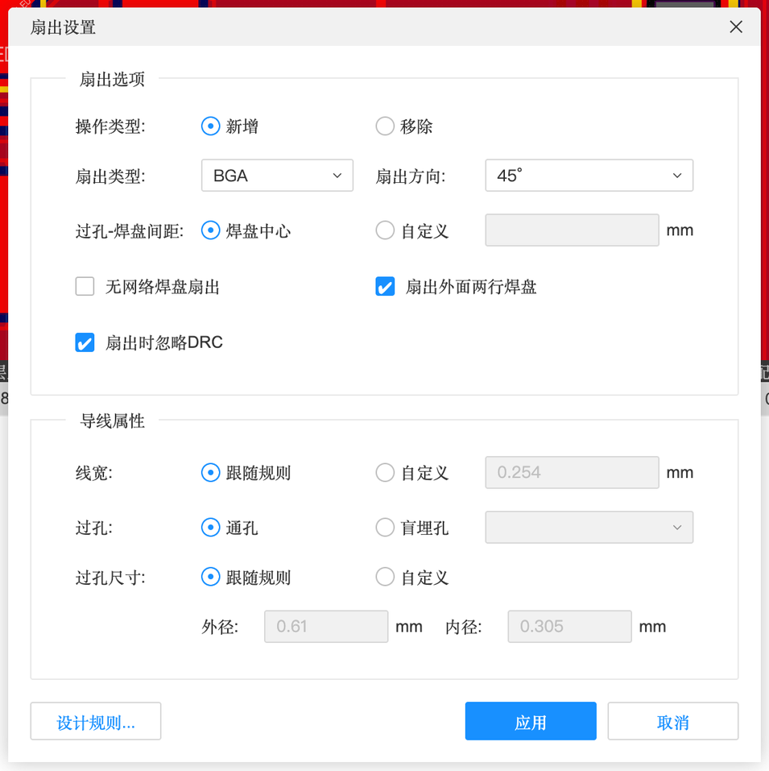
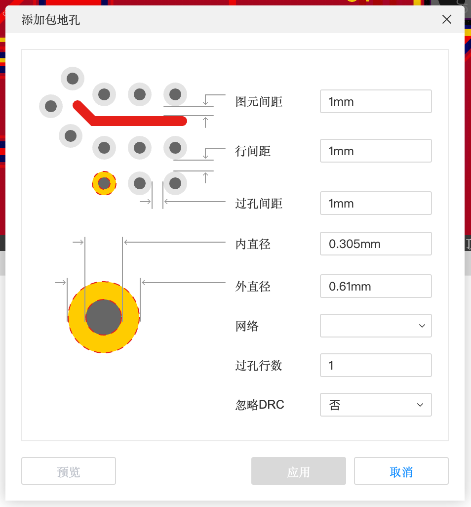

7.2 多层板与高速布线
两层板装不下了怎么办？信号太快了怎么办？这一页讲多层板（层叠、内电层、盲埋孔）、阻抗的基本概念、高速布线工具（差分、等长、扇出）、自动布局布线，以及缝合孔、包地孔、测试点这些提高可靠性的手段。
多层板#
什么时候需要多层板#
- 线太多，两层走不开（芯片引脚多、元件密）
- 需要完整的“地平面”给高速信号做回路（USB 高速、HDMI、射频）
- 需要控制阻抗（见下）
- 价格：4 层板比 2 层贵，但现在打样也不算贵了，以下单页为准
把板子改成 4 层（工具 → 图层管理器）#

图层管理器（实测）
| 选项 | 含义 |
|---|---|
| 铜箔层 | 铜层数量：1、2、4、6、8……（实测下拉一直到 30 多层） |
| 颜色配置 / 非激活层透明度 | 各层显示颜色，不是当前层时的透明度 |
| PCB类型 | 普通板材 等 |
| 层列表：序号 / 名称 / 类型 / 颜色 / 透明度 | 内层的类型可选「信号层」或「内电层」 |
层叠（物理堆叠）#
图层管理器的「物理堆叠」标签显示每一层的真实材料和厚度。本教程实测了 2 层和 4 层的默认层叠：


| 层 | 材质（实测） | 厚度 mm | 介电常数 |
|---|---|---|---|
| 顶层 | 外层铜厚 1oz | 0.035 | — |
| 介电1 | 7628 RC49% 8.6mil（半固化片 PP） | 0.2104 | 4.4 |
| 内层1 | 内层铜厚 | 0.0152 | — |
| 介电2 | 1.1mm H/HOZ 含铜（芯板 Core） | 1.065 | 4.43 |
| 内层2 | 内层铜厚 | 0.0152 | — |
| 介电3 | 7628 RC49% 8.6mil | 0.2104 | 4.4 |
| 底层 | 外层铜厚 1oz | 0.035 | — |
盲埋孔#
普通过孔从顶层打穿到底层（通孔）。多层板还可以有：盲孔（从表面打到某个内层，另一面看不到）和埋孔（两个内层之间，表面都看不到）。好处是省空间，缺点是贵很多。设计规则 → 盲埋孔 blindVia 里定义起止层。新手做 4 层板也用通孔就够了。
阻抗：为什么高速线要“控制线宽”#
信号频率很高时，一根走线就不再是“一根导线”，而像一根“传输线”，它有一个特性阻抗（单位 Ω）。线的阻抗要和芯片要求的匹配（常见 50 Ω 单端、USB 差分 90 Ω），否则信号会在线上来回反射，波形变形。阻抗主要由三样决定：线宽、线到下面参考地平面的距离（介质厚度）、介电常数。
高速布线#
| 工具 | 位置 | 作用 |
|---|---|---|
| 差分对布线 | 布线菜单 ⌥D | 两根线并排一起画，实时显示长度误差（B-3） |
| 多路布线 | 布线菜单 | 一次画好几根平行线（总线） |
| 等长调节 | 布线菜单 ⇧A | 给太短的线绕“蛇形”增加长度，和组里最长的对齐 |
| 差分对等长调节 | 布线菜单 | 差分对里 P、N 两根线之间互相等长 |
| 扇出布线… | 布线菜单 | BGA 等密集芯片：自动从每个焊盘拉出一小段线并打过孔，方便后续布线 |
| 引脚延迟管理器 | 工具菜单 | 补偿芯片内部的引线长度 |
| 差分对交换 / 引脚交换 | 工具 → 交换 | P、N 接反了或引脚顺序别扭时交换（需先配置，4.6） |

自动化#
| 功能 | 位置 | 说明 |
|---|---|---|
| 自动元件布局 | 布局菜单 | 软件自动摆元件。通常当作“起点”，再手动调整 |
| 自动布线 | 布线 → 自动布线 | 双引擎：JRouter（质量好）/ HRouter（速度快）。本教程两个案例都用过：案例 A 布通率 100%；案例 B 卡在 85.71%，要先手动布 USB（B-3） |
| 导出 / 导入自动布线 DSN | 导出菜单 / 文件 → 导入 | 把板子交给外部自动布线软件（如 Freerouting）布完再导回来 |
抗干扰与可靠性#
| 手段 | 位置 | 是什么 |
|---|---|---|
| 缝合孔 | 放置 → 缝合孔 | 在顶层和底层的 GND 铺铜之间密密地打一片过孔，把两层地“缝”在一起，降低地的阻抗、减少干扰 |
| 包地孔 | 放置 → 包地孔… | 沿着一根敏感信号线（如时钟、射频）两边打一排接地过孔，像“围栏”一样隔离干扰 |
| 测试点 | 放置 → 测试点 | 给生产测试或自己调试留的探针接触点；导出测试点报告 |
| 泪滴 | 工具 → 泪滴 | 见 6.4 |

复用模块在 PCB 中#
原理图里用了复用模块（4.4）时，PCB 里可以用「设计」→「从复用模板更新布局布线…」把模块里画好的布局和走线一键套过来：同样的电路放 4 次，只要布一次线。
本章小结#
- 知道设计规则的四大类和每条默认值的意思
- 会用网络类 + 网络规则给一批线设置特殊线宽
- 知道区域规则 > 网络-网络规则 > 网络规则
- 会把板子改成 4 层，看懂层叠里的芯板、半固化片、介电常数
- 明白阻抗由线宽、介质厚度、介电常数决定，以及高速板为什么用 4 层
- 知道差分、等长、扇出、缝合孔、包地孔分别解决什么问题